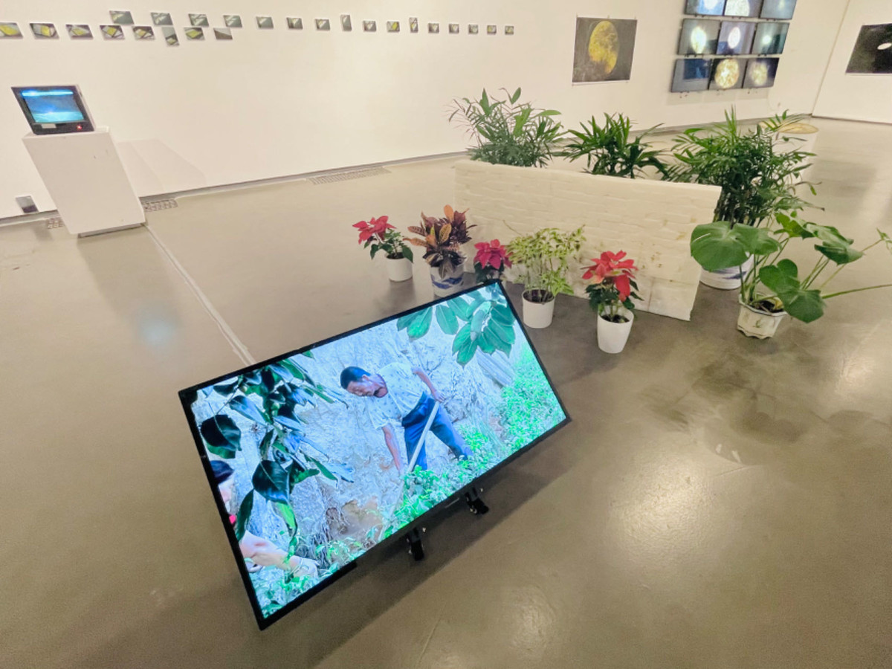

东墙 | THE EAST WALL
青砖、录像、PLA树脂打印 ，墙尺寸为72x145x10cm，录像时长14分钟、可变尺寸，2020
Blue brick, video art, PLA resin printing, Wall size of 72x145x10cm, Video film length of 14 minutes, Variable size, 2020
凤飞翱翔兮，四海求凰。无奈佳人兮，不在东墙。 ——《琴歌·有美人兮》，佚名，汉
See up and down the phoenix fly, Seeking his mate low and high. Alas! the lady fair, Can’t be found at the east wall. ——Phoenix Seeking His Mate, Unknown, Han Dynasty
2020年春天，将苏州太湖边一堵青砖墙寄到了2000公里以外的西北甘肃省石节子村。
In the spring of 2020, I sent a blue brick wall by Taihu Lake in Suzhou to Shijiazi Village in northwest Gansu Province, 2,000 kilometers away.
《东墙》获得2020年第八届五粮液明天雕塑奖提名
The East Wall is a finalist for the eighth Tomorrow Sculpture Award in 2020
东墙在苏州
The east wall is in Suzhou
两地相距两千公里，谷歌地图
Two thousand kilometers apart, Google map
东墙在天水
The east wall is in Tianshui

南京艺术学院美术馆，南京
NArt Museum of Nanjing University of the Arts, Nanjing